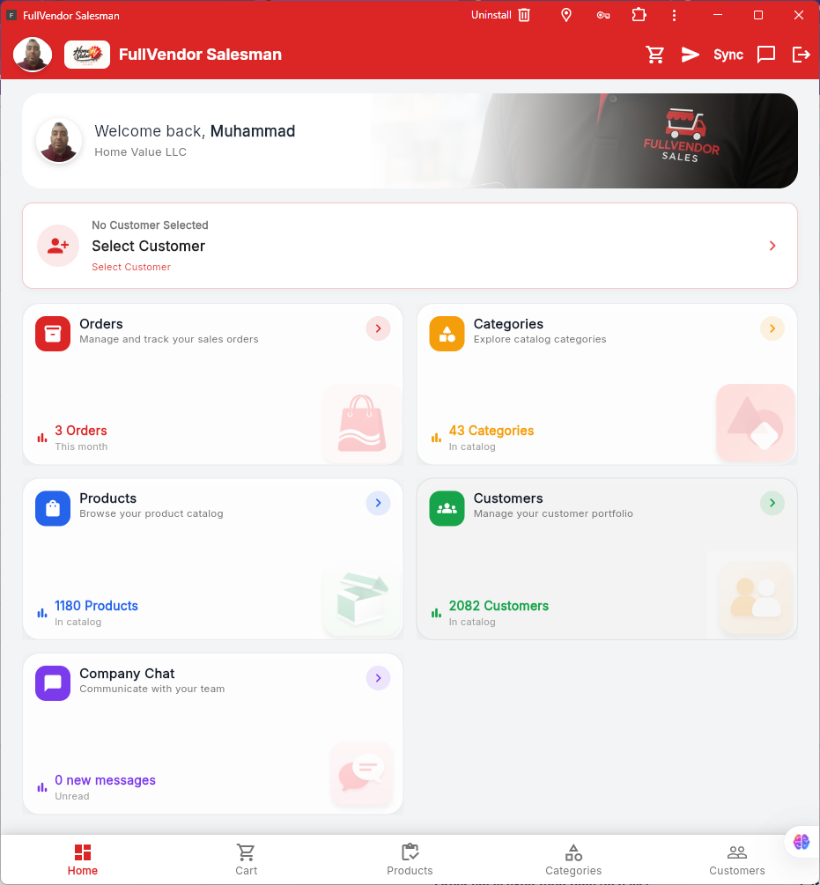
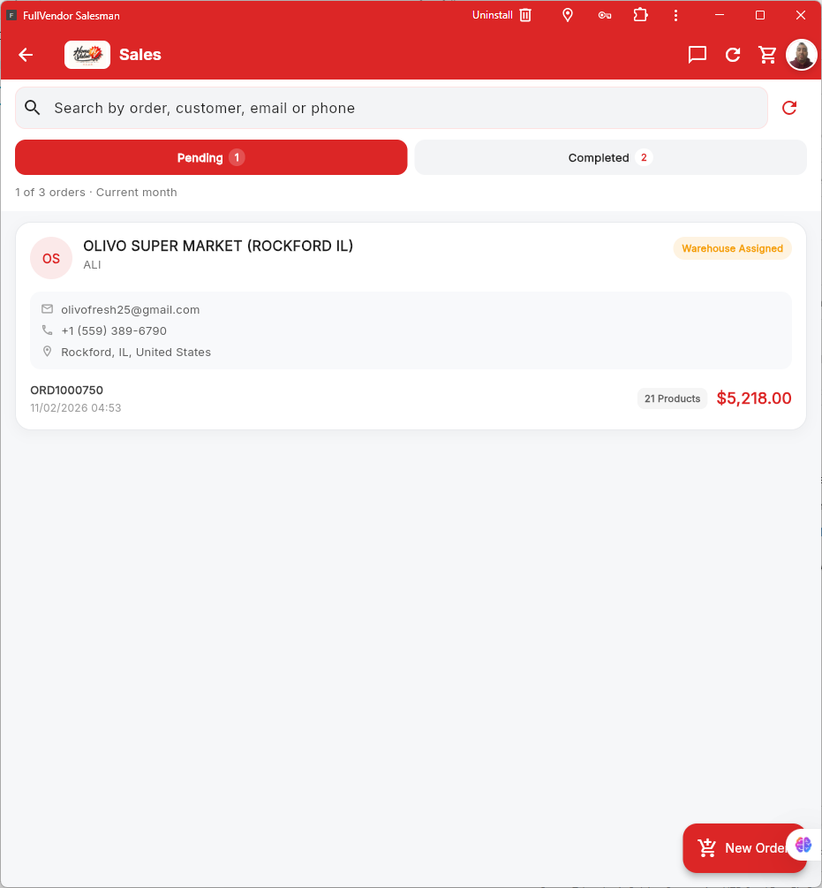
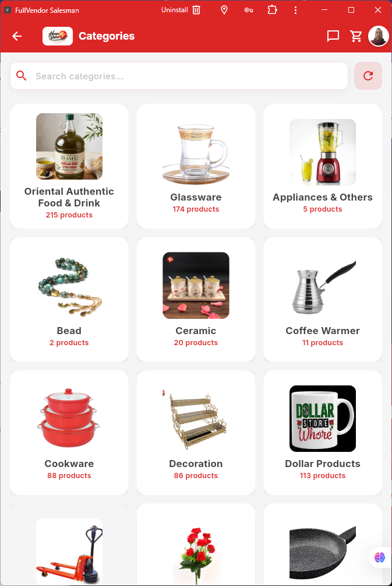
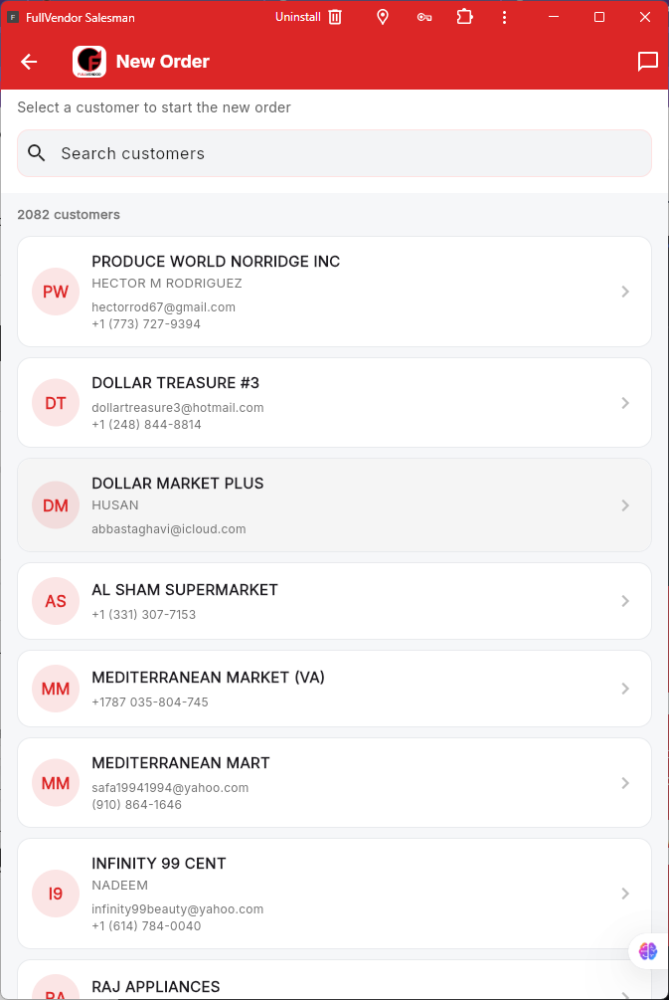
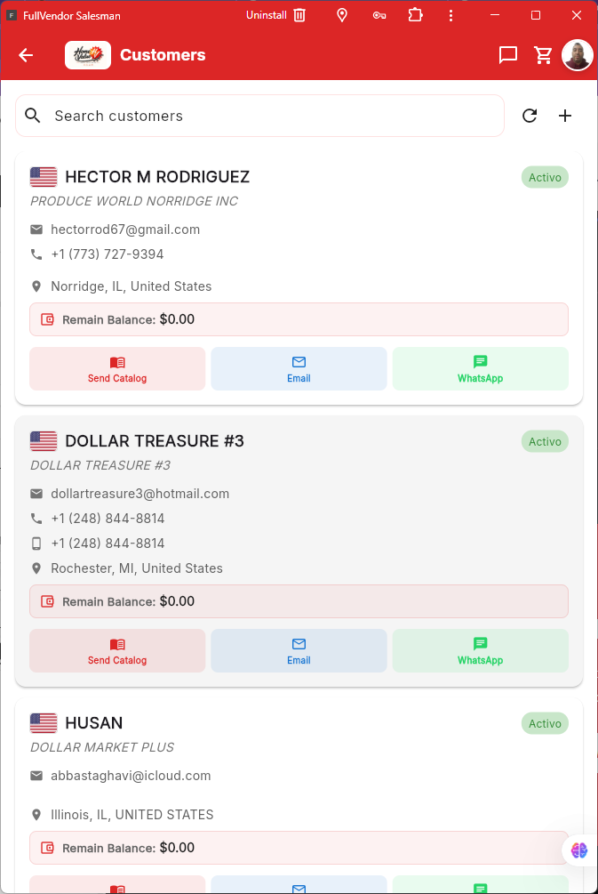
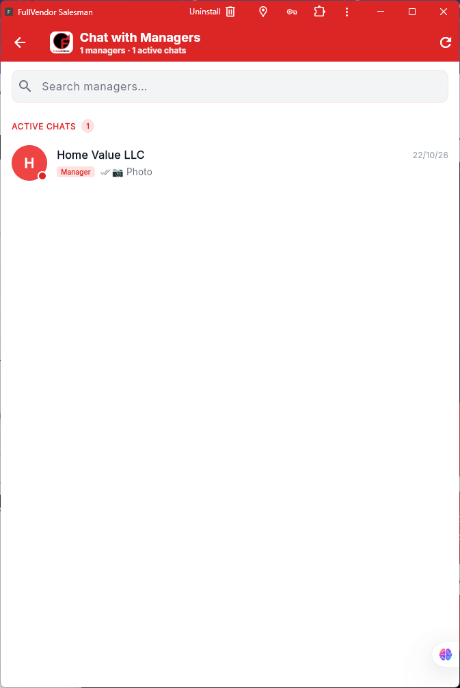

Panel de inicio
Indicadores rápidos y accesos a los principales módulos de trabajo.
FullVendor Salesman reúne clientes, pedidos, productos y comunicación comercial en una aplicación móvil pensada para vendedores que trabajan en movimiento.

Accede a la información comercial y continúa el trabajo con menos pasos, desde una interfaz clara y fácil de usar.
Indicadores rápidos y accesos a los principales módulos de trabajo.
Consulta órdenes pendientes y completadas, con búsqueda y datos de cada pedido.
Explora el catálogo por familias y encuentra rápidamente lo que busca el cliente.
Selecciona al cliente para iniciar el proceso de creación de una orden.
Consulta contactos, ubicación, balance y opciones de comunicación.
Conversa con los administradores y revisa los chats activos.
Las capturas originales de FullVendor Salesman se presentan dentro de marcos de dispositivo para mostrar cómo se ve la aplicación en uso.
Consulta de un vistazo la actividad del mes, el cliente seleccionado y los accesos directos a pedidos, categorías, productos y clientes.

Busca pedidos por cliente, correo o teléfono y cambia entre pedidos pendientes y completados. Revisa el importe, la cantidad de productos y el estado de cada operación.

Explora el catálogo visual organizado por categorías. Las imágenes y los contadores permiten identificar rápidamente dónde están los productos que necesita cada cliente.

Busca entre los clientes disponibles y selecciona la cuenta correcta para comenzar una nueva orden de venta.

Consulta datos comerciales, contacto, ubicación y balance pendiente. Desde la ficha puedes enviar catálogos, contactar por email o continuar la conversación por WhatsApp.

Consulta los chats activos y comunícate con los responsables de tu empresa desde la aplicación, sin salir del flujo de trabajo.

Conecta la gestión diaria de vendedores con el ecosistema FullVendor.